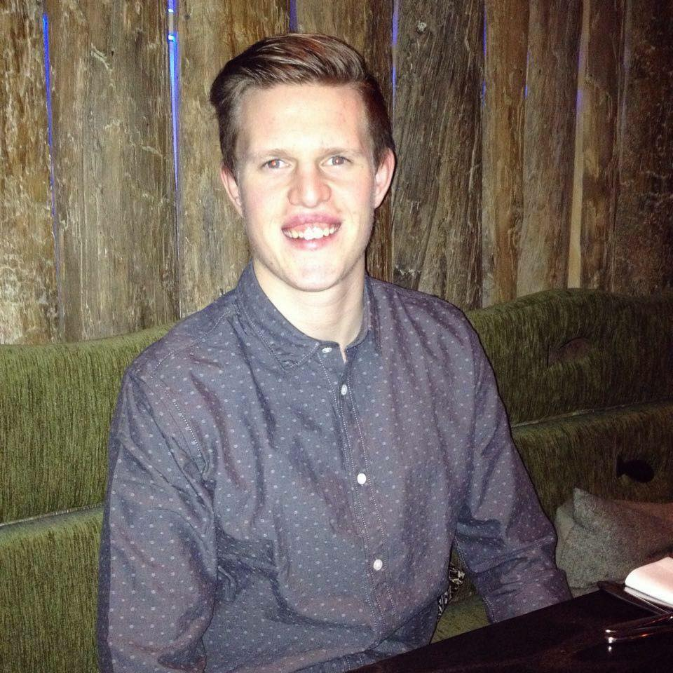
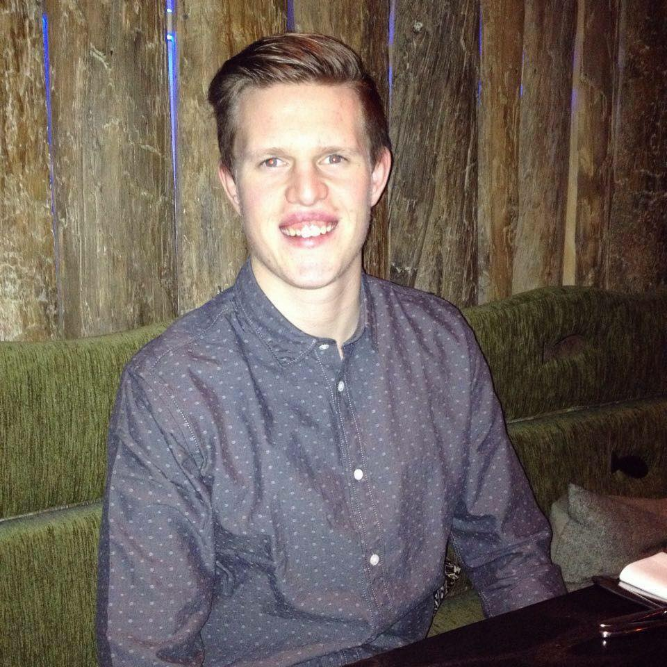
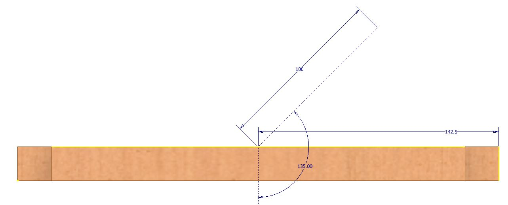
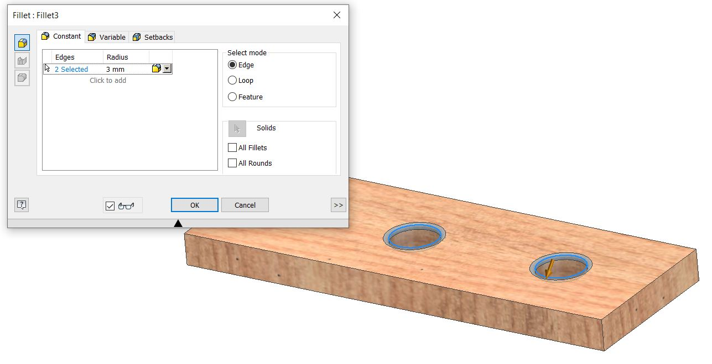

1. About me
2. Laser cut pressfit
3. 3D Printing and scanning
 

Alexander Róbert Magnússon
Aron Óttarsson
Þorkell Helgason
For the final project we decided to recreate a nice looking wine stand. Here on this page I will be going over my contribution to the project, but if you want to see the final product it can be found here.
To start off we looked online for designs that we liked, we found various designs that looked good but in the end we decided to go for something along the lines of this wine stand, vertical wine stand.
We then decided that two glasses would be enough for now so we would not need the second glass holder on the top, but we would use the extra space to add one more wine holder so that we could hold six wine bottles in our stand.
For the early stages of the project we split up the responsibilities to our strengths, Alexander started working on the management side of the project and set up milestones and how we would keep track of the project, Þorkell started working on documentation and how we would document the final outcome and the steps we took to get there, and I started designing the wine stand. The first step to designing the wine stand was to figure out how big wine bottles are to make sure that the holes for the neck of the bottles would be far enough apart, but not to far apart. I then started figuring out the final dimentions of the wine stand.
Now that I had a rough idea of how big each component needed to be I started drawing them.

----------------------LAGA OG GERA GATIÐ 35mm-----------------------------------
As wine bottles can be quite heavy we wanted to make sure that we would get a good bond between the wood pieces, to make sure of that we decided to have them pressfit together and the use wood glue and screws to reinforce the connection. This meant that we needed to create one drawing for the end pieces and one drawing for the middle piece.
The next step is to draw the backing plates, because the wine holders are angled at 45° the length of the wine holder will be a very wierd number so that the height from the top and bottom of the wine holders will be nice.
To make sure that the bond to the wall would be good as well the backing plates will have predrilled countersunk holes for 4mm wood screws, the hole that will be milled in the part is 3mm wide so that the threads of the screw will hold onto the backing plates with the head of the screw.

Because the holders are at a 45° angle to the backing plates it is possible to run into some problems while constraining the parts together. The first idea to counter this was to cut the backing plates into two solids at a 45° angle where we wanted the top of the holders to be, this would not be in the final product, just in the drawing to help constrain, that however was not a good fix to the problem, in the end we added construction lines to the holder drawings that could be used to constrain everything together.
The construction line of the middle holder is in the middle of the holder and is constrained to the side of the backing plate with an offset of half the distance between the backing plates to make it centered. The construction line of the top holder is at the end of the holder and is constrained to the top of the backing plate with an offset so that it is not at the very top of the backing plates.

Now all that was left was to add in some wine bottles. As these were mostly for the renderings (and making sure that the wine bottles actually fit) the model for the wine bottle and wine glasses that will be added later was downloaded from grabcad and can be found here: Red wine bottle and wine glass.
To make inserting the wine bottles into the wine stand a little bit easier I also added some fillets to the holders, this will also make the wine bottle sit a little bit better in the wine stand.
Now that the drawing was complete it was time to make files that the CNC milling machine can read and use to machine the parts. To start with I created another assembly that is composed of the wine holders and the shelf that holds the glasses as these are all 20mm thick parts.
Setting up the milling files would be much easier in Vcarve but it would not be able to mill out the fillet, so we decided to use the inventor HSM add-in (CAM add in for inventor 2020-)
The first step is to add the tool and holder that will be used in the milling operation. This is done by opening the tool library on the right side of the ribbon and selecting new tool. Then in the cutter tab the tool geometry is specified, for this operation we will be using a 4 mm flat mill tool.
The holder geometry is not correct, but that can be changed in the holder geometry tab, the holder geometry is changed so that it reflects the actual holder geometry of the milling machine at Fablab.
Now that the tool and holder geometry are correct the next step is to create the setup of the milling file, here the orientation, origin point and stock is defined.
Now that those parameters have been defined it is time to set up the milling strategies. The first strategy is a 2D contour that will mill out the final shape of the holders and shelf. The first step in all strategies is to define the feeds and speeds, these parameters are defined by the number of flutes and size of the tool being used, though it depends on the material that is being cut aswell. For most woods around 150 mm/s cutting feedrate works well with 12000 rpm so that will be used. For the plunge feedrate I have gotten good results with around 20 mm/s.
The second step is to define the geometry, for this strategy the most important step is to select all the contours that we want to cut out. Here you can also set tabs but for this project it is okay to exclude them.
The third tab is for defining the heights of the strategy, as this is a 2D strategy the bottom height is automatically set to the same height as the top height, this makes sure that there will only be one pass and the strategy is only in 2D, but we want to use it to cut out the part so the bottom height needs to be changed to the model bottom.
The fourth step is for defining the actual cut, or the passes. Here it is important to make sure that the multiple depths checkbox is checked, otherwise the settings shown in the next two pictures have worked well in the past.
Now the contour strategy was ready.